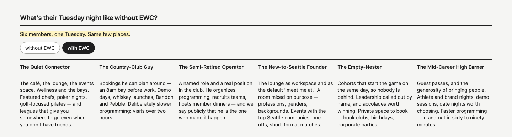
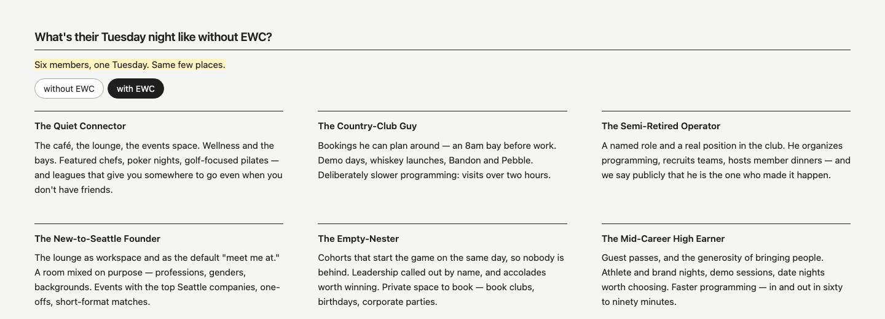
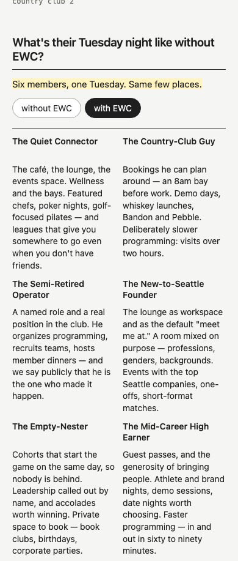
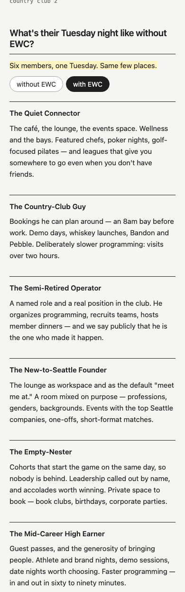
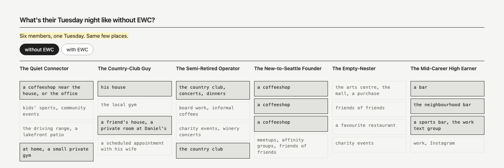

Study 47 · 27 October 2026 · Kahran
EWC, six Tuesdays at once, re-spaced
Kahran picked 46 · 2. This is that page alone, with the same words. Only "with EWC" changes: the gives are paragraphs, so the six go to three columns (two on a tablet, one on a phone), the line gets longer and looser, there's more air between the six, and the empty band under each name is gone. "Without EWC" is as it was.
"two is the way to go. It's just that with EWC, it needs to be spaced out a little better, so it's a little more readable. But otherwise, I think this is honestly a good one."
Kahran, 27 Oct, on Study 46Open it in its own tab and press "with EWC".
"With EWC", before and after
| 46 · 2 | 47 | |
|---|---|---|
| wide: to a row, gap | 6, 12px | 3, 56px |
| wide: between rows | one row | 44px |
| phone: to a row, gap | 2, 12px | 1, 32px |
| a give's width (wide / phone) | 211 / 169px | 405 / 350px |
| type | 14px / 1.4 | 15px / 1.6 |
| name to give | 28px (an empty band) | 11px |
measure.mjs measures these; check.cjs holds 47 to them, and fails 46 · 2.





Next: the text pass. Every string on the page has a data-copy id; the full list, with each string's flag and source, is copy.json. Change the words in words.json and run build.cjs.